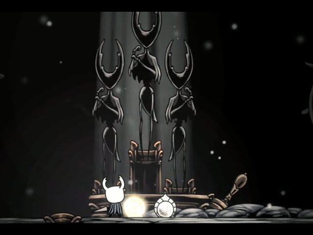

Sobrecarga (Overcharmed)

¿Qué es la Sobrecarga?
La Sobrecarga es una mecánica avanzada y oculta en Hollow Knight que permite al Caballero equipar un amuleto adicional incluso si no tiene suficientes Muescas disponibles. Es el "arma de doble filo" definitiva: obtienes los beneficios de un amuleto poderoso extra, pero a cambio, el Caballero recibirá el doble de daño de todas las fuentes.
Advertencia de Supervivencia
Bajo el estado de sobrecarga, cualquier ataque que normalmente quite 1 máscara quitará 2. Los ataques de jefes avanzados que quitan 2 máscaras te quitarán 4 de golpe, lo que puede resultar en una muerte instantánea.
Cómo Forzar la Sobrecarga
Esta mecánica no se explica en el juego; el jugador debe descubrirla por insistencia. Para activarla, sigue estos pasos:
Llena tus Muescas
Equipa amuletos hasta que solo te quede una muesca libre o ninguna.
Intenta Equipar
Selecciona un amuleto que requiera más muescas de las que tienes e intenta ponerlo varias veces.
El Quiebre
Tras el quinto o sexto intento, el amuleto entrará a la fuerza y tu barra de muescas brillará en púrpura.
¿Cuándo vale la pena el riesgo?
Aunque parece un suicidio, la sobrecarga es una herramienta estándar para los jugadores de nivel experto, especialmente en el DLC Godmaster.
Dificultad Radiante
En el Hogar de los Dioses, al luchar contra jefes en dificultad Radiante, mueres de un solo golpe sin importar cuánta vida tengas. En este escenario, el doble daño de la sobrecarga no tiene penalización real, ya que morirías de todas formas. ¡Es el momento de equipar tus mejores amuletos gratis!

Consejo de papus:
Para maximizar la sobrecarga, siempre llena tus muescas con amuletos pequeños (de costo 1 o 2) y deja para el final el amuleto más pesado (como Cuerpo Firme o Marca de Orgullo). De esta forma, puedes llegar a tener un valor real de 14 o 15 muescas en un espacio de 11.